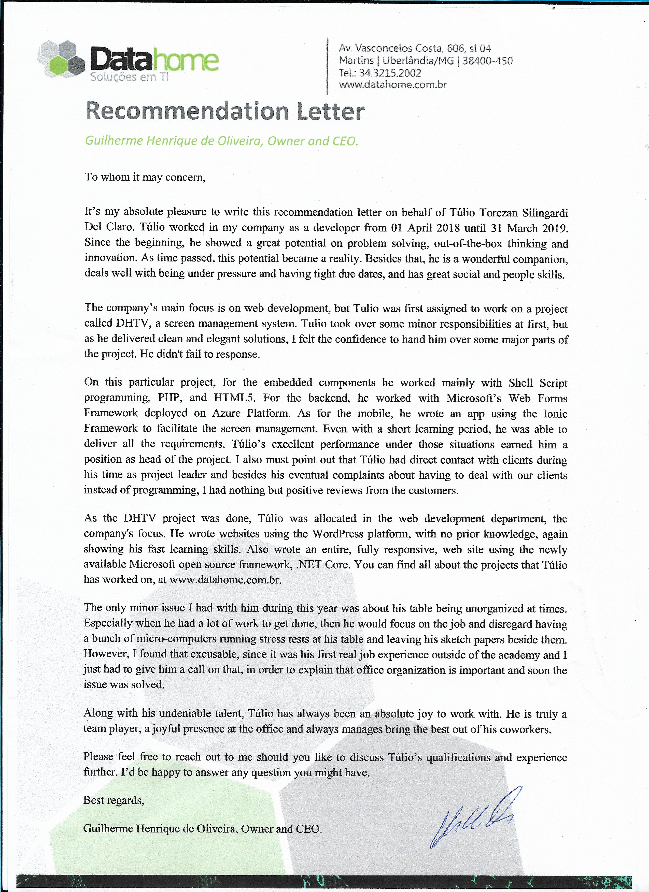
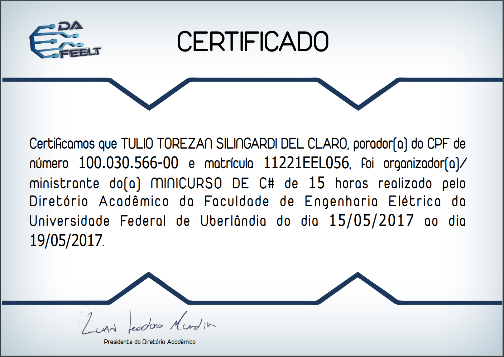

Hi I'm Túlio Torezan
Developer, Data Analyst and Electrical Engineer
A Brazilian Developer, Data Analyst and Electrical Engineer, passionate about programming, data analysis and its applications to help people. Worked as a data analyst and neural network developer for about 3 years in a joint research project between the University of Uberlandia and Petrobras with the goal of automating machinery monitoring and database cleansing. I now moved to Halifax, Canada and took a one year Full Stack App Dev course in order to get a better foundation on application development and programming in ganeral.
College
-Universidade Federal De Uberlândia (2012-2019)
I lived in a city with approximately 700k inhabitants and this was its best and most competitive university to be approved to. I took the test just for practice at my second year in highschool and got approved for Electrical Engineering. However, since I was still midway through the second year of highschool, I had to remain for one and a half years on highschool and college simultaneously.
College
-University of Colorado Boulder (2015-2016)
While still an Undergrad student, I got awarded one year of full scholarship at the Colorado University, Boulder by a grant called "Science Without Borders" and therefore spent one year in Boulder as an international exchange student.
Graduate Certificate
-Nova Scotia Community College (2022-2023)
After having a few years work experience as data analyst and developer, I decided to take the Full Stack Application Development course at NSCC because up to this point all my programming knowledge was either self though or from advice and getting help from more experienced people. Therefore, taking a formal course was helpful to strengthen my foundation and and provide me with better programming practices.
×

×
×

×

Experience
2013-2014
Undergrad Research Assistant
Biolab - Awarded Scholarship Young Talents for Science
As I got into college, I took a test for this scholarship award and was selected as one of the deserving students. Then, since I had already talked to Professor Alcimar B. Soares about my interest in his field of study, he took me in for tutoring at his biomedical engineering lab (BioLab). There, I learned C# programming and got involved in a project about making the three dimensional model of human head (I used 3dsMax for this) and a C# app to apply Electroencephalography (EEG) mapping results over the model 3d for better medical visualization.
2014-2015
Undergrad Research Assistant
Institutional Program for Technological Development and Inovation Grants (PIBIT)
In this year, I applied for a grant for technology development and innovation with Professor Adriano A. Pereira, and our project was awarded with the grant. This research was based on the development a system, including both software and hardware to study the correlation between musclular pain and the trajectory of the executed movement in martial arts. The movement trajectory was calculated using multiple cells with a magnetometer and a accelerometer in each, attached to the volunteers limbs.
2015-2016
Exchange Student
University Of Colorado, Boulder - Full Scholarship
From august 2015 to may 2016 I was an exchange student on Electrical Engineering major at CU Boulder, I was awarded full scholarship for tuition and housing by a grant called "science without borders". During which time I got a GPA of 3.627
2016-2016
Summer Intern
University of California, Santa Cruz
I spent a couple of months (11 weeks) in UCSC as a summer intern at Professor Josh Stuart's lab in the Biomolecular Engineering Department, worked with C and C++ graph network code development for data analysis. There, I learned about genetic pathways, cancer genomics, and enhanced my programming skills, algorithm and datascience knowledge regarding big datasets.
2017-2018
Undergrad Research Assistant
Biolab - Volunteerly
As I returned from my time as an Exchange student, I went back to working with Professor Alcimar B. Soares but now as a volunteer at his lab. During this year I mostly helped out the younger students on their struggles, teached a condensated class on electromyography signal processing on C#, (certificate here) built a game for the competition of a conference and got awarded as Winner - Brazilian National Conference on Electromyography and Kinesiology Competition, studied to enhance my own skills and then started building the software and hardware for the application we submitted for a grant on the next year.
2018-2019
Undergrad Research Assistant
Biolab - Awarded grant by "Institutional Program for Scientific Initiation Grants"(PIBIC)
This grant was awarded to the application I begun developing on the previous year, which was the software and hardware for supporting research on motor skills learning by paretic post-stroke patients. The goal was to enable a physiotherapist PhD student to run all the designed tests and provide statistics, like learning curves, strength recovery of the patient, accuracy of the movement and the development of each patient through time. Providing a better understanding on how the acquisition of new motor skills happen on imparied patients, in order to develop better strategies for their rehabilitation in the clinical steps of treatment.
2018-2019
Developer
DataHome
I was at DataHome from 1st of April 2018 until 31st of March 2019, during the first three months I was an intern for my work term, required by the university, then I kept working there for the rest of the year for the salary and the work experience I would get. During this year, I was even promoted to project lead of the project I began working into, and I worked mostly with shell scripts, HTML5, Microsoft Web Forms Framework and .NET Core. However, I also got some experience working with Argular.js, Xamarin (mobile app development) and SQL.
2019-2022
Data Analyst and Developer
Petrobras
Worked for 2 years and 9 months at a joint research project between the University of Uberlandia and Petrobras (Brazil’s biggest oil company). My main role was as a data analyst and neural network developer, using TensorFlow in python, where our team combined multiple algorithms in order to automate data analysis of the monitored industry’s machinery. I was also responsible for developing electromagnetic circuits and helping on challenges related to electrical engineering when needed.
SKILLS


Contact Me
Contact Info
If you are interested in contacting me for any professional purposes or you are just courious about any of the projects and experiences I mentioned above, please feel free to contact me through the info below.
Phone
+1 (782) 882-3536
tuliotorezan@gmail.com